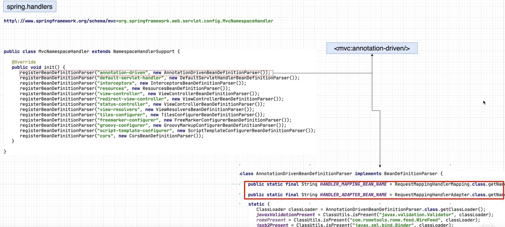
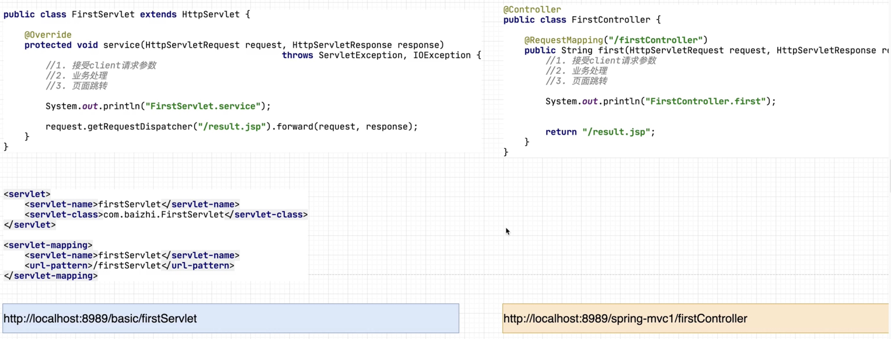

SpringMVC开发案例、
1. 开发版本
1. JDK 1.8
2. Maven 3.6
3. IDEA 2021.1
4. SpringFramework 5.2.6
5. Tomcat 8.5.61
6. Mysql 8.0.22
2. 环境搭建
<?xml version="1.0" encoding="UTF-8"?>
<project xmlns="http://maven.apache.org/POM/4.0.0"
xmlns:xsi="http://www.w3.org/2001/XMLSchema-instance"
xsi:schemaLocation="http://maven.apache.org/POM/4.0.0 http://maven.apache.org/xsd/maven-4.0.0.xsd">
<modelVersion>4.0.0</modelVersion>
<groupId>org.example.mvc</groupId>
<artifactId>SpringMVC-Study</artifactId>
<packaging>pom</packaging>
<version>1.0</version>
<modules>
<module>mvc-study-01</module>
</modules>
<properties>
<maven.compiler.source>8</maven.compiler.source>
<maven.compiler.target>8</maven.compiler.target>
<java.version>1.8</java.version>
<spring-version>5.2.6.RELEASE</spring-version>
<aspectjrt-version>1.9.5</aspectjrt-version>
<aspectjweaver-version>1.9.5</aspectjweaver-version>
<mysql-connector-version>5.1.47</mysql-connector-version>
<spring-jdbc-version>5.2.13.RELEASE</spring-jdbc-version>
<spring-mybatis-version>2.0.6</spring-mybatis-version>
<mybatis-version>3.5.6</mybatis-version>
<druid-version>1.2.6</druid-version>
</properties>
<dependencies>
<!-- spring对web开发的支持依赖 -->
<dependency>
<groupId>org.springframework</groupId>
<artifactId>spring-web</artifactId>
<version>${spring-version}</version>
</dependency>
<dependency>
<groupId>org.springframework</groupId>
<artifactId>spring-webmvc</artifactId>
<version>${spring-version}</version>
</dependency>
<!-- spring核心 -->
<dependency>
<groupId>org.springframework</groupId>
<artifactId>spring-core</artifactId>
<version>${spring-version}</version>
</dependency>
<!-- bean注解的开发 -->
<dependency>
<groupId>org.springframework</groupId>
<artifactId>spring-beans</artifactId>
<version>${spring-version}</version>
</dependency>
<!-- spring-context依赖注入容器 -->
<dependency>
<groupId>org.springframework</groupId>
<artifactId>spring-context</artifactId>
<version>${spring-version}</version>
</dependency>
<!-- spring事物控制 -->
<dependency>
<groupId>org.springframework</groupId>
<artifactId>spring-tx</artifactId>
<version>${spring-version}</version>
</dependency>
<!-- spring-aop面向切面 -->
<dependency>
<groupId>org.springframework</groupId>
<artifactId>spring-aop</artifactId>
<version>${spring-version}</version>
</dependency>
<!-- aop 注解相关 -->
<dependency>
<groupId>org.aspectj</groupId>
<artifactId>aspectjrt</artifactId>
<version>${aspectjrt-version}</version>
</dependency>
<!-- aop 切入点表达式相关依赖 -->
<dependency>
<groupId>org.aspectj</groupId>
<artifactId>aspectjweaver</artifactId>
<version>${aspectjweaver-version}</version>
</dependency>
<!-- logback日志 -->
<dependency>
<groupId>org.slf4j</groupId>
<artifactId>slf4j-api</artifactId>
<version>1.7.25</version>
</dependency>
<dependency>
<groupId>org.slf4j</groupId>
<artifactId>jcl-over-slf4j</artifactId>
<version>1.7.25</version>
</dependency>
<dependency>
<groupId>ch.qos.logback</groupId>
<artifactId>logback-classic</artifactId>
<version>1.2.3</version>
</dependency>
<dependency>
<groupId>ch.qos.logback</groupId>
<artifactId>logback-core</artifactId>
<version>1.2.3</version>
</dependency>
<dependency>
<groupId>org.logback-extensions</groupId>
<artifactId>logback-ext-spring</artifactId>
<version>0.1.4</version>
</dependency>
<!-- mysql驱动包 -->
<dependency>
<groupId>mysql</groupId>
<artifactId>mysql-connector-java</artifactId>
<version>${mysql-connector-version}</version>
</dependency>
<!--spring针对jdbc封装-->
<dependency>
<groupId>org.springframework</groupId>
<artifactId>spring-jdbc</artifactId>
<version>${spring-jdbc-version}</version>
</dependency>
<!-- mybatis与spring整合相关 -->
<dependency>
<groupId>org.mybatis</groupId>
<artifactId>mybatis-spring</artifactId>
<version>${spring-mybatis-version}</version>
</dependency>
<!-- mybatis -->
<dependency>
<groupId>org.mybatis</groupId>
<artifactId>mybatis</artifactId>
<version>${mybatis-version}</version>
</dependency>
<!-- druid 连接池 -->
<dependency>
<groupId>com.alibaba</groupId>
<artifactId>druid</artifactId>
<version>${druid-version}</version>
</dependency>
<dependency>
<groupId>org.yaml</groupId>
<artifactId>snakeyaml</artifactId>
<version>1.23</version>
</dependency>
<dependency>
<groupId>junit</groupId>
<artifactId>junit</artifactId>
<version>4.13.1</version>
<scope>compile</scope>
</dependency>
</dependencies>
</project>
3. 配置文件
1. SpringMVC的配置文件就是Spring的配置文件
2. 配置文件名称可以随意命名(dispatcher.xml)
3. 文件位置可以根据需要随意放置(建议是放置在资源文件夹的根下)
4. 初始化配置
4.1 web.xml配置
1. web.xml中配置DispatcherServlet(前端控制器｜中央控制器)
2. DispatcherServlet的核心作用
1. 用于创建Spring工厂(容器)
2. 控制SpringMVC的内部运行流程
<!-- web.xml -->
<?xml version="1.0" encoding="UTF-8"?>
<web-app xmlns="http://xmlns.jcp.org/xml/ns/javaee"
xmlns:xsi="http://www.w3.org/2001/XMLSchema-instance"
xsi:schemaLocation="http://xmlns.jcp.org/xml/ns/javaee http://xmlns.jcp.org/xml/ns/javaee/web-app_4_0.xsd"
version="4.0">
<!-- 配置dispatcherServlet -->
<servlet>
<servlet-name>dispatcherServlet</servlet-name>
<servlet-class>org.springframework.web.servlet.DispatcherServlet</servlet-class>
<!-- 指定SpringMVC配置文件的路径 -->
<init-param>
<param-name>contextConfigLocation</param-name>
<param-value>classpath:dispatcher.xml</param-value>
</init-param>
<!-- 表示本Servlet会在Tomcat启动时就创建 -->
<load-on-startup>1</load-on-startup>
</servlet>
<servlet-mapping>
<servlet-name>dispatcherServlet</servlet-name>
<url-pattern>/</url-pattern>
</servlet-mapping>
</web-app>
4.2 SpringMVC配置
<?xml version="1.0" encoding="UTF-8"?>
<beans xmlns="http://www.springframework.org/schema/beans"
xmlns:xsi="http://www.w3.org/2001/XMLSchema-instance"
xmlns:context="http://www.springframework.org/schema/context"
xmlns:mvc="http://www.springframework.org/schema/mvc"
xsi:schemaLocation="http://www.springframework.org/schema/beans http://www.springframework.org/schema/beans/spring-beans.xsd http://www.springframework.org/schema/context https://www.springframework.org/schema/context/spring-context.xsd http://www.springframework.org/schema/mvc https://www.springframework.org/schema/mvc/spring-mvc.xsd">
<!-- 配置注解扫描路径 -->
<context:component-scan base-package="org.example.mvc.demo1"/>
<!-- 引入SpringMVC的核心功能 -->
<mvc:annotation-driven/>
</beans>
1. <mvc:annotation-driven/>配置的主要作用是引入SpringMVC的核心功能
- 主要引入了2个核心类型，如下图
1. RequestMappingHandlerMapping
2. RequestMappingHandlerAdapter
3. RequestMappingHandlerMapping作用
- 实现了HandlerMapping接口，对@RequestMapping注解进行处理，并将其注册到请求映射表中
4. RequestMappingHandlerAdapter作用
- 实现了HandlerAdapter接口，是处理请求的适配器，确定调用某个符合要求的控制器中具体的服务方法
2. <context:component-scan base-package="org.example.mvc.demo1"/>
1. 对基本注解进行扫描
- DispatcherServlet所创建的工厂需要读取XML的配置文件，不能使用纯注解的开发。
- 所以目前使用Spring配置文件+基础注解的形式，进行开发。
2. 基础注解
- @Component @Service @Repository @Controller @Scope @Transactional等
3. 高级注解
- @Configuration @Bean @ComponentScan等

5. 编码开发
5.1 SpringMVC与Servlet开发的区别

5.2 开发流程
1. 开发一个类在上面标注@Controller注解(标注@Controller的类称之为控制类)
2. 在标注@Controller注解的类中提供一个方法参数为(HttpServletRequest,HttpServletResponse)，
返回值为String同时在方法上标注@RequestMapping注解定义请求路径
3. 在控制器方法中，完成对应的业务开发，把对应JSP路径作为方法的返回值返回
5.3 控制器编码
/**
* Created by Ale on 2022/4/7
*/
@Controller
public class FirstController {
@RequestMapping("/first")
public String first(HttpServletRequest request, HttpServletResponse response) {
System.out.println("first controller");
return "/result.jsp";
}
}
5.4 注意
1. SpringMVC开发中习惯性的把Controller称之为控制器，但是SpringMVC内部则是称之为Handler
2. 针对于Servlet开发，一种类型的Servlet只会被Tomcat创建一次，所以Servlet是单实例的，但并不是单例设计模式
3. 对与SpringMVC Controller而言它可被创建多次，也可被创建一次。
1. 默认是只创建一次,会存在线程安全问题，如果想被创建多次可添加注解@Scope("prototype")
4. @RequestMapping注解
- 核心作用是为方法提供外部访问的URL路径
- 路径分隔符"/"可省略，如有多级则第一级可省略，如下栗子
- @RequestMapping("users")
- @RequestMapping("user/orders")
- 如果标注在类上就表示当前控制器中所有对外提供服务的方法就要加上一个层级
- 比如在类中标注@RequestMapping("users")，那么其方法的访问路径就是users/xxx/xxx
5. 一个控制器方法多个访问路径
- @RequestMapping(value = {"users","user/list"}),代表当前控制器方法可通过users与user/list两个方法访问